An introduction to the prospectr
package
Antoine Stevens and Leonardo Ramirez-Lopez [ramirez.lopez.leo@gmail.com]
2026-05-17
Source:vignettes/prospectr.Rmd
prospectr.Rmd
Preamble
prospectr is becoming more and more used in
spectroscopic applications, which is evidenced by the number of
scientific publications citing the package. This package is very useful
for signal processing and chemometrics in general as it provides various
utilities for pre–processing and sample selection of spectral data.
While similar functions are available in other packages, like signal,
the functions in this package works indifferently for
data.frame, matrix and vector
inputs. Besides, several functions are optimized for speed and use C++
code through the Rcpp and
RcppArmadillo
packages.
Introduction
Several spectroscopic techniques such as Near-Infrared (NIR)
spectroscopy are high–throughput, non–destructive and cheap sensing
methods that has a range of applications in agricultural, medical, food
and environmental science. A number of R packages of
interest for the spectroscopist is already available for processing and
analysis of spectroscopic data.
Since the publication of the special Volume in Spectroscopy and Chemometrics in R (Mullen and Stokkum 2007) many spectroscopy-related packages have been released. Most of these packages can be found at the following CRAN task views:
In addition, Bryan Hanson provides a list of Free Open Source Software (FOSS) dedicated to Spectroscopic applications in general (see https://bryanhanson.github.io/FOSS4Spectroscopy/).
Citing the package
prospectr is becoming more and more used in
spectroscopic applications, which is evidenced by the number of
scientific publications citing the package. This package is very useful
for signal processing and chemometrics in general as provides various
utilities for pre–processing and sample selection of spectral data.
Please use the following citation. Simply type and you will get the info
you need:
citation(package = "prospectr")## To cite package 'prospectr' in publications use:
##
## Antoine Stevens and Leornardo Ramirez-Lopez (2026). An introduction
## to the prospectr package. R package Vignette R package version 0.2.9.
##
## A BibTeX entry for LaTeX users is
##
## @Manual{,
## title = {An introduction to the prospectr package},
## author = {Antoine Stevens and Leornardo Ramirez-Lopez},
## publication = {R package Vignette},
## year = {2026},
## note = {R package version 0.2.9},
## }Signal Processing
The aim of spectral pre-treatment is to improve signal quality before modeling as well as remove physical information from the spectra. Applying a pre-treatment can increase the repeatability/reproducibility of the method, model robustness and accuracy, although there are no guarantees this will actually work. The pre-processing functions that are currently available in the package are listed in Table 1.
Table 1. List of pre-processing functions
| Function Name | Description |
|---|---|
movav |
simple moving (or running) average filter |
savitzkyGolay |
Savitzky–Golay smoothing and derivative |
gapDer |
gap–segment derivative |
baseline |
baseline removal (similar to continuumRemoval) |
continuumRemoval |
computes continuum–removed values |
detrend |
detrend normalization |
standardNormalVariate |
Standard Normal Variate (SNV) transformation |
msc |
Multiplicative Scatter Correction |
binning |
average a signal in column bins |
resample |
resample a signal to new band positions |
resample2 |
resample a signal using new FWHM values |
blockScale |
block scaling |
blockNorm |
sum of squares block weighting |
We show below how they can be used, using the Near-Infrared (NIR) dataset (NIRsoil) included in the package (Fernandez-Pierna and Dardenne 2008). Observations should be arranged row-wise.
library(prospectr)
data(NIRsoil)
# NIRsoil is a data.frame with 825 obs and 5 variables: Nt (Total Nitrogen),
# Ciso (Carbon), CEC (Cation Exchange Capacity), train (vector of 0,1
# indicating training (1) and validation (0) samples), spc (spectral matrix)
str(NIRsoil)## 'data.frame': 825 obs. of 5 variables:
## $ Nt : num 0.3 0.69 0.71 0.85 NA ...
## $ Ciso : num 0.22 NA NA NA 0.9 NA NA 0.6 NA 1.28 ...
## $ CEC : num NA NA NA NA NA NA NA NA NA NA ...
## $ train: num 1 1 1 1 1 1 1 1 1 1 ...
## $ spc : num [1:825, 1:700] 0.339 0.308 0.328 0.364 0.237 ...
## ..- attr(*, "dimnames")=List of 2
## .. ..$ : chr [1:825] "1" "2" "3" "4" ...
## .. ..$ : chr [1:700] "1100" "1102" "1104" "1106" ...Noise removal
Noise represents random fluctuations around the signal that can originate from the instrument or environmental laboratory conditions. The simplest solution to remove noise is to perform repetition of the measurements, and the average individual spectra. The noise will decrease with a factor . When this is not possible, or if residual noise is still present in the data, the noise can be removed mathematically.
Moving average or running mean
A moving average filter is a column-wise operation which average contiguous wavelengths within a given window size.
# add some noise
noisy <- NIRsoil$spc + rnorm(length(NIRsoil$spc), 0, 0.001)
# Plot the first spectrum
plot(x = as.numeric(colnames(NIRsoil$spc)),
y = noisy[1, ],
type = "l",
lwd = 1.5,
xlab = "Wavelength",
ylab = "Absorbance")
X <- movav(X = noisy, w = 11) # window size of 11 bands
# Note that the 5 first and last bands are lost in the process
lines(x = as.numeric(colnames(X)), y = X[1,], lwd = 1.5, col = "red")
grid()
legend("topleft",
legend = c("raw", "moving average"),
lty = c(1, 1), col = c("black", "red"))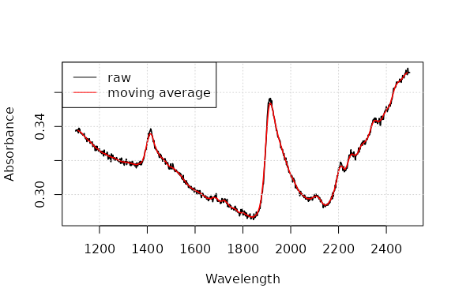
Effect of a moving average with window size of 11 bands on a raw spectrum
Savitzky-Golay filtering
Savitzky-Golay filtering (Savitzky and Golay 1964) is a very common preprocessing technique. It fits a local polynomial regression on the signal and requires equidistant bandwidth. Mathematically, it operates simply as a weighted sum of neighbouring values:
where is the new value, is a normalizing coefficient, is the number of neighbour values at each side of and are pre-computed coefficients, that depends on the chosen polynomial order and degree (smoothing, first and second derivative).
# p = polynomial order w = window size (must be odd) m = m-th derivative (0 =
# smoothing) The function accepts vectors, data.frames or matrices. For a
# matrix input, observations should be arranged row-wise
sgvec <- savitzkyGolay(X = NIRsoil$spc[1, ], p = 3, w = 11, m = 0)
sg <- savitzkyGolay(X = NIRsoil$spc, p = 3, w = 11, m = 0)
# note that bands at the edges of the spectral matrix are lost !
dim(NIRsoil$spc)## [1] 825 700
dim(sg)## [1] 825 690Derivatives
Taking (numerical) derivatives of the spectra can remove both additive and multiplicative effects in the spectra and have other consequences as well (Table 2).
Table 2. Pro’s and con’s of using derivative spectra.
| Advantage | Drawback |
|---|---|
| Reduce of baseline offset | Risk of overfitting the calibration model |
| Can resolve absorption overlapping | Increase noise, smoothing required |
| Compensates for instrumental drift | Increase uncertainty in model coefficients |
| Enhances small spectral absorptions | Complicate spectral interpretation |
| Often increase predictive accuracy | Remove the baseline ! |
| for complex datasets |
First and second derivatives of a spectrum can be computed with the finite difference method (difference between two subsequent data points), provided that the band width is constant:
In R, this can be simply achieved with the diff function
in base:
# X = wavelength
# Y = spectral matrix
# n = order
d1 <- t(diff(t(NIRsoil$spc), differences = 1)) # first derivative
d2 <- t(diff(t(NIRsoil$spc), differences = 2)) # second derivative
plot(as.numeric(colnames(d1)),
d1[1,],
type = "l",
lwd = 1.5,
xlab = "Wavelength",
ylab = "")
lines(as.numeric(colnames(d2)), d2[1,], lwd = 1.5, col = "red")
grid()
legend("topleft",
legend = c("1st der", "2nd der"),
lty = c(1, 1),
col = c("black", "red"))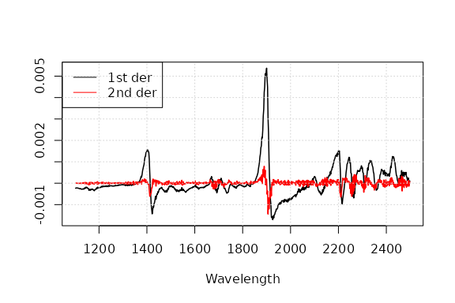
Effect of first derivative and second derivative
One can see that derivatives tend to increase noise. One can use gap derivatives or the Savitzky-Golay algorithm to solve this. The gap derivative is computed simply as:
where
is the gap size. Again, this can be easily achieved in R using the
lag argument of the diff function
For more flexibility and control over the degree of smoothing, one
could however use the Savitzky-Golay (savitzkyGolay) and
gap-segment derivative (gapDer) algorithms. The Gap-segment
algorithms performs first a smoothing under a given segment size,
followed by a derivative of a given order under a given gap size. Here
is an example of the use of the gapDer function. For
Savitzky-Golay and gap-segment derivatives we refer the reader to Luo et al. (2005) and Hopkins (2001) respectively.
# m = order of the derivative
# w = gap size
# s = segment size
# first derivative with a gap of 5 bands
gsd1 <- gapDer(X = NIRsoil$spc, m = 1, w = 11, s = 5)
plot(as.numeric(colnames(d1)),
d1[1,],
type = "l",
lwd = 1.5,
xlab = "Wavelength",
ylab = "")
lines(as.numeric(colnames(gsd1)), gsd1[1,], lwd = 1.5, col = "red")
grid()
legend("topleft",
legend = c("1st der","gap-segment 1st der"),
lty = c(1,1),
col = c("black", "red"))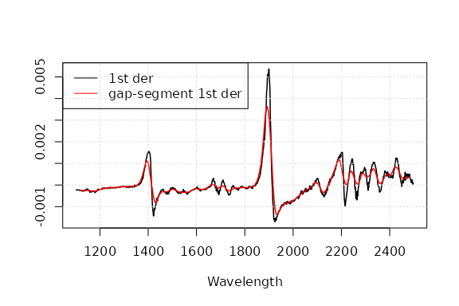
Effect of 1st-order gap-segment derivative
Scatter and baseline corrections
Undesired spectral variations due to light scatter effects and variations in effective path length can be removed using scatter corrections.
Standard Normal Variate (SNV)
Standard Normal Variate (SNV) is another simple way for normalizing spectra that intends to correct for light scatter. It operates row-wise:
snv <- standardNormalVariate(X = NIRsoil$spc)According to Fearn (2008), it is better to perform SNV transformation after filtering (by e.g. Savitzky-Golay) than the reverse.
Multiplicative scatter correction (MSC)
Along with SNV, MSC (Geladi et al. 1985) this is one of the most widely used pre-processing techniques in NIR spectroscopy (Rinnan et al. 2009). This is a normalization method that attempts to account for additive and multiplicative effects by aligning each spectrum () with an ideal reference one () as follows: where and are the additive and multiplicative terms respectively.
# X = input spectral matrix
msc_spc <- msc(X = NIRsoil$spc, ref_spectrum = colMeans(NIRsoil$spc))
plot(as.numeric(colnames(NIRsoil$spc)),
NIRsoil$spc[1,],
type = "l",
xlab = "Wavelength, nm", ylab = "Absorbance",
lwd = 1.5)
lines(as.numeric(colnames(NIRsoil$spc)),
msc_spc[1,],
lwd = 1.5, col = "red")
axis(4, col = "red")
grid()
legend("topleft",
legend = c("raw", "MSC signal"),
lty = c(1, 1),
col = c("black", "red"))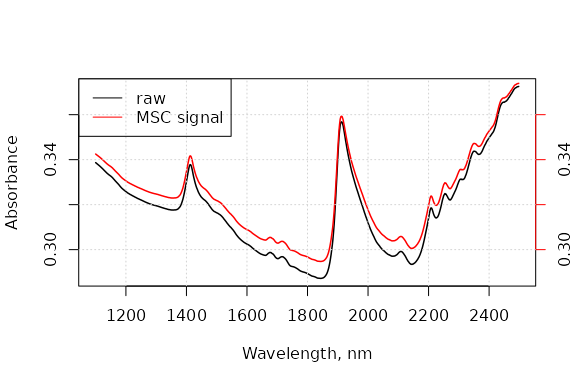
Effect of MSC on raw spectra
par(new = FALSE)Since the MSC-corrected is based on a reference spectrum, it is
necessary to save this spectrum in order to apply the same type of
processing to new spectra later on. The following code shows how this
can be done in prospectr:
# a reference set of spectra
Xr <- NIRsoil$spc[NIRsoil$train == 1, ]
# an "unseen" set of spectra
Xu <- NIRsoil$spc[NIRsoil$train == 0, ]
# apply msc to Xr
Xr_msc <- msc(Xr)
# apply the same msc to Xu
attr(Xr_msc, "Reference spectrum") # use this info from the previous object
Xu_msc <- msc(Xu, ref_spectrum = attr(Xr_msc, "Reference spectrum"))SNV-Detrend
The SNV-Detrend (Barnes et al. 1989) further accounts for wavelength-dependent scattering effects (variation in curvilinearity between the spectra). After a SNV transformation, a 2-order polynomial is fit to the spectrum and subtracted from it.
# X = input spectral matrix
# wav = band centers
dt <- detrend(X = NIRsoil$spc, wav = as.numeric(colnames(NIRsoil$spc)))
plot(as.numeric(colnames(NIRsoil$spc)),
NIRsoil$spc[1,],
type = "l",
xlab = "Wavelength",
ylab = "Absorbance",
lwd = 1.5)
par(new = TRUE)
plot(dt[1,],
xaxt = "n",
yaxt = "n",
xlab = "",
ylab = "",
lwd = 1.5,
col = "red",
type = "l")
axis(4, col = "red")
grid()
legend("topleft",
legend = c("raw", "detrend signal"),
lty = c(1, 1),
col = c("black", "red"))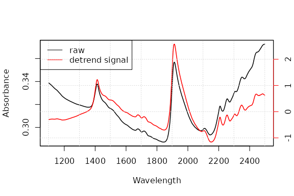
Effect of SNV-Detrend on raw spectra
par(new = FALSE)Baseline removal
This method estimates the baseline of a given spectrum and subtract
it from the original spectrum. For this, the baseline
function comprises three basic steps:
The convex hull points of each spectrum are identified using the
grDevices::chullfunction.To obtain the baseline of each spectrum, the convex hull points are linearly interpolated to the same frequencies of the original spectra.
The baseline of each spectrum is subtracted from the original input spectrum.
data(NIRsoil)
wav <- as.numeric(colnames(NIRsoil$spc))
# plot of the 3 first absorbance spectra
matplot(wav,
t(NIRsoil$spc[1:3, ]),
type = "l",
ylim = c(0, .6),
xlab = "Wavelength /nm",
ylab = "Absorbance")
grid()
bs <- baseline(NIRsoil$spc, wav)
matlines(wav, t(bs[1:3, ]))
fitted_baselines <- attr(bs, "baselines")
matlines(wav, t(fitted_baselines[1:3, ]))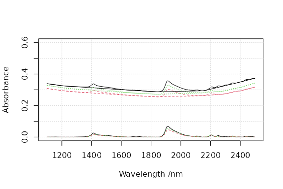
Absorbance spectra, baseline spectra and baseline corrected spectra
Centering and scaling
Centering and scaling tranforms a given matrix to a matrix with columns with zero mean (centering), unit variance (scaling) or both (auto-scaling):
where and are the mean centered and auto-scaled matrices, is the input matrix, and are the mean and standard deviation of variable .
In R, these operations are simply obtained with the
scale function. Other types of scaling can be considered.
Spectroscopic models can often be improved by using ancillary data
(e.g. temperature, …) (Fearn 2010). Due to the nature of
spectral data (multivariate), other data would have great chance to be
dominated by the spectral matrix and have no chance to contribute
significantly to the model due to purely numerical reasons (Eriksson et al.
2006). One can use block scaling to overcome this
limitation. It basically uses different weights for different block of
variables. With soft block scaling, each block is scaled (ie
each column divided by a factor) such that the sum of their variance is
equal to the square root of the number of variables in the block. With
hard block scaling, each block is scaled such that the sum of
their variance is equal to 1.
# X = spectral matrix type = 'soft' or 'hard' The ouptut is a list with the
# scaled matrix (Xscaled) and the divisor (f)
bs <- blockScale(X = NIRsoil$spc, type = "hard")$Xscaled
sum(apply(bs, 2, var)) # this works!## [1] 1he problem with block scaling is that it down-scale all the block variables to the same variance. Since sometimes this is not advised, one can alternatively use sum of squares block weighting . The spectral matrix is multiplied by a factor to achieve a pre-determined sum of square:
# X = spectral matrix targetnorm = desired norm for X
bn <- blockNorm(X = NIRsoil$spc, targetnorm = 1)$Xscaled
sum(bn^2) # this works!## [1] 1Resampling
To match the response of one instrument with another, a signal can be
resampled to new band positions by simple interpolation
(resample) or using full width half maximum (FWHM) values
(resample2).
Other transformations
Continuum removal
The continuum removal technique was introduced by Clark and Roush (1984) as an effective method to
highlight absorption features of minerals. It can be viewed as an albedo
normalization technique. This technique is based on the computation of
the continuum (or envelope) of a given spectrum. It is very similar to
baseline, however it differs from it in the third step, in
which instead of a baseline subtraction it divides the original spectrum
by its continuum as follows:
where and are the original and the continuum reflectance (or absorbance) values respectively at the ^th wavelength of a set of wavelengths, and is the final reflectance (or absorbance) value after continuum removal.
The continuumRemoval function allows to compute the
continuum-removed values of either reflectance or absorbance
spectra.
# type of data: 'R' for reflectance (default), 'A' for absorbance
cr <- continuumRemoval(X = NIRsoil$spc, type = "A")
# plot of the 10 first abs spectra
matplot(as.numeric(colnames(NIRsoil$spc)),
t(NIRsoil$spc[1:3,]),
type = "l",
lty = 1,
ylim = c(0,.6),
xlab="Wavelength /nm",
ylab="Absorbance")
matlines(as.numeric(colnames(NIRsoil$spc)), lty = 1, t(cr[1:3, ]))
grid()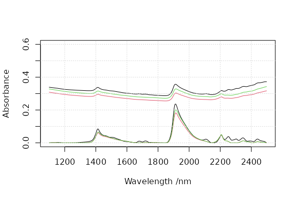
Absorbance and continuum-removed absorbance spectra
Calibration sampling algorithms
Calibration models are usually developed on a representative portion of the data (training set) and validated on the remaining set of samples (test/validation set). There are several solutions for selecting samples, e.g.:
- random selection (see e.g.
samplefunction inbase) - stratified random sampling on percentiles of the response
- use the spectral data.
For selecting representative samples, the prospect
package provides functions that use the third solution. The following
functions are available:
naes: k-means Sampling (Naes et al. 2002)kenStone: Kennard-Stone Sampling a.k.a. CADEX Sampling (Kennard and Stone 1969)duplex: Duplex Sampling (Snee 1977)puchwein: Factor Analysis Sampling (Puchwein 1988)shenkWest: SELECT Sampling (Shenk and Westerhaus 1991)honigs: Honigs Sampling (Honigs et al. 1985)
-means
sampling (naes)
The -means sampling simply uses -means clustering algorithm. To sample a subset of samples , from a given set of samples (note that ) the algorithm works as follows:
Perform a -means clustering of using clusters.
Extract the centroids (, or prototypes). This can be also the sample that is the farthest away from the centre of the data, or a random selection. See the
methodargument innaesCalculate the distance of each sample to each .
For each allocate in its closest sample found in .
# X = the input matrix
# k = number of calibration samples to be selected
# pc = if pc is specified, k-mean is performed in the pc space
# (here we will use only the two 1st pcs)
# iter.max = maximum number of iterations allowed for the k-means clustering.
kms <- naes(X = NIRsoil$spc, k = 5, pc = 2, iter.max = 100)
# Plot the pcs scores and clusters
plot(kms$pc, col = rgb(0, 0, 0, 0.3), pch = 19, main = "k-means")
grid()
# Add the selected points
points(kms$pc[kms$model, ], col = "red", pch = 19)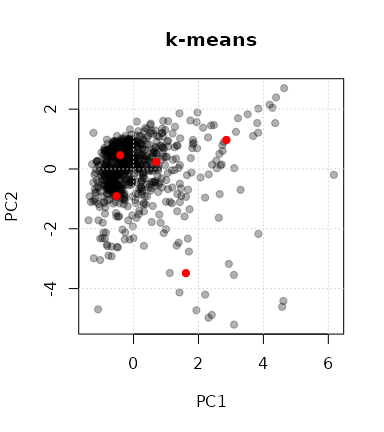
Selection of 5 samples by k-means sampling
Kennard-Stone sampling (kenStone)
To sample a subset of samples , from a given set of samples (note that ) the Kennard-Stone (CADEX) sampling algorithm consists in Kennard and Stone (1969):
Find in the samples and that are the farthest apart from each other, allocate them in and remove them from .
Find in the sample with the maximum dissimilarity to . Allocate in and then remove it from . The dissimilarity between and each is given by the minimum distance of any sample allocated in to each . In other words, the selected sample is one of the nearest neighbours of the points already selected which is characterized by the maximum distance to the other points already selected.
Repeat the step 2 n-3 times in order to select the remaining samples ().
The Kennard-Stone algorithm allows to create a calibration set that has a flat distribution over the spectral space. The metric used to compute the distance between points can be either the Euclidean distance or the Mahalanobis distance. One of the drawbacks of this algorithm is that it is prone to outlier selection (Ramirez-Lopez et al. 2014), therefore outlier analysis is recommended before sample selection.
Let’s see some examples…
# Create a dataset for illustrating how the calibration sampling
# algorithms work
X <- data.frame(x1 = rnorm(1000), x2 = rnorm(1000))
plot(X, col = rgb(0, 0, 0, 0.3), pch = 19, main = "Kennard-Stone (synthetic)")
grid()
# kenStone produces a list with row index of the points selected for calibration
ken <- kenStone(X, k = 40)
# plot selected points
points(X[ken$model,], col = "red", pch = 19, cex = 1.4) 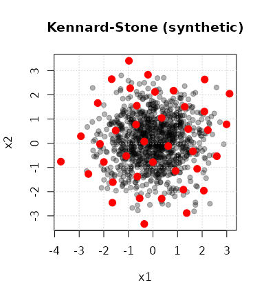
Selection of 40 calibration samples with the Kennard-Stone algorithm
# Test with the NIRsoil dataset
# one can also use the mahalanobis distance (metric argument)
# computed in the pc space (pc argument)
ken_mahal <- kenStone(X = NIRsoil$spc, k = 20, metric = "mahal", pc = 2)
# The pc components in the output list stores the pc scores
plot(ken_mahal$pc[,1],
ken_mahal$pc[,2],
col = rgb(0, 0, 0, 0.3),
pch = 19,
xlab = "PC1",
ylab = "PC2",
main = "Kennard-Stone")
grid()
# This is the selected points in the pc space
points(ken_mahal$pc[ken_mahal$model, 1],
ken_mahal$pc[ken_mahal$model,2],
pch = 19, col = "red") 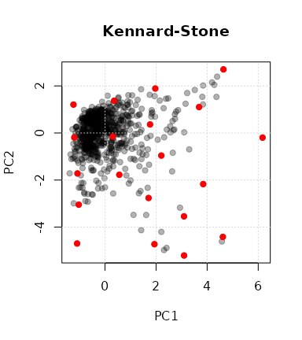
Kennard-Stone sampling on the NIRsoil dataset
In cases where we have calibration samples which have been already
pre-selected, we can use the init argument of the
kenStone() function. If we want to force (because of
convenience) a subset of observations in the calibration set search we
can initialize the Kennard-Stone algorithm with such samples. For
example:
# Indices of the initialization samples
initialization_ind <- c(486, 702, 722, 728)
ken_mahal_init <- kenStone(X = NIRsoil$spc, k = 20, metric = "mahal", pc = 2, init = initialization_ind)
ken_mahal_init$model## [1] 486 702 722 728 615 619 679 410 614 39 592 617 191 716 613 825 792 611 239
## [20] 640
# The pc components in the output list stores the pc scores
plot(ken_mahal_init$pc[,1],
ken_mahal_init$pc[,2],
col = rgb(0, 0, 0, 0.3),
pch = 19,
xlab = "PC1",
ylab = "PC2",
main = "Kennard-Stone with 4 initialization samples")
grid()
# This is the selected points in the pc space
points(ken_mahal$pc[ken_mahal$model, 1],
ken_mahal$pc[ken_mahal$model, 2],
pch = 19, col = "red")
# Our initialization samples
points(ken_mahal$pc[initialization_ind, 1],
ken_mahal$pc[initialization_ind, 2],
pch = 19, cex = 1.5, col = "blue") 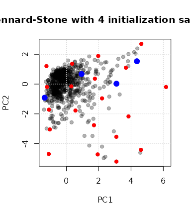
Kennard-Stone sampling with initialization samples
DUPLEX (duplex)
The Kennard-Stone algorithm selects calibration samples. Often, we need also to select a validation subset. The DUPLEX algorithm (Snee 1977) is a modification of the Kennard-Stone which allows to select a validation set that have similar properties to the calibration set. DUPLEX, similarly to Kennard-Stone, begins by selecting pairs of points that are the farthest apart from each other, and then assigns points alternatively to the calibration and validation sets.
dup <- duplex(X = X, k = 15) # k is the number of selected samples
plot(X, col = rgb(0, 0, 0, 0.3), pch = 19, main = "DUPLEX")
grid()
# calibration samples
points(X[dup$model, 1], X[dup$model, 2], col = "red", pch = 19)
# validation samples
points(X[dup$test,1], X[dup$test,2], col = "dodgerblue", pch = 19)
legend("topright",
legend = c("calibration", "validation"),
pch = 19,
col = c("red", "dodgerblue"))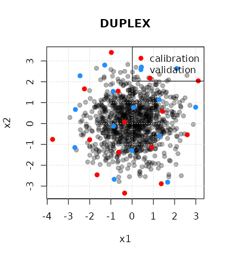
Selection of 15 calibration and validation samples with the DUPLEX algorithm
SELECT algorithm (shenkWest)
The SELECT algorithm (Shenk and Westerhaus 1991) is an
iterative procedure which selects the sample having the maximum number
of neighbour samples within a given distance (d.min
argument) and remove the neighbour samples of the selected sample from
the list of points. The number of selected samples depends on the chosen
treshold (default = 0.6). The distance metric is the Mahalanobis
distance divided by the number of dimensions (number of pc components)
used to compute the distance. Here is an example of how the
shenkWest function might work:
shenk <- shenkWest(X = NIRsoil$spc, d.min = 0.6, pc = 2)
plot(shenk$pc, col = rgb(0, 0, 0, 0.3), pch = 19, main = "SELECT")
grid()
points(shenk$pc[shenk$model,], col = "red", pch = 19)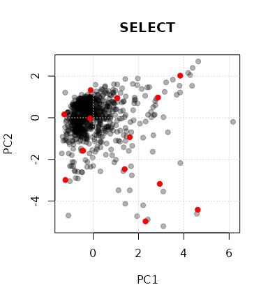
Selection of samples with the SELECT algorithm
Puchwein algorithm (puchwein)
The Puchwein algorithm is yet another algorithm for calibration sampling (Puchwein 1988) that create a calibration set with a flat distribution. A nice feature of the algorithm is that it allows an objective selection of the number of required calibration samples with the help of plots. First the data is usually reduced through PCA and the most significant PCs are retained. Then the mahalanobis distance () to the center of the matrix is computed and samples are sorted decreasingly. The distances betwwen samples in the PC space are then computed.
Here are the steps followed by the algorithm:
Step 1. Define a limiting distance.
Step 2. Find the sample with` .
Step 3. Remove all the samples which are within the limiting distance away from the sample selected in step 2.
Step 4. Go back in step 2 and find the sample with within the remaining samples.
Step 5. When there is no sample anymore, go back to step 1 and increase the limiting distance.
pu <- puchwein(X = NIRsoil$spc, k = 0.2, pc =2)
plot(pu$pc, col = rgb(0, 0, 0, 0.3), pch = 19, main = "puchwein")
grid()
points(pu$pc[pu$model,],col = "red", pch = 19) # selected samples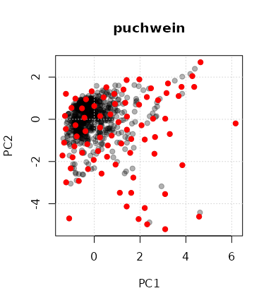
Samples selected by the Puchwein algorithm
par(mfrow = c(2, 1))
plot(pu$leverage$removed,pu$leverage$diff,
type = "l",
xlab = "# samples removed",
ylab="Difference between th. and obs sum of leverages")
# This basically shows that the first loop is optimal
plot(pu$leverage$loop,nrow(NIRsoil) - pu$leverage$removed,
xlab = "# loops",
ylab = "# samples kept", type = "l")
par(mfrow = c(1, 1))Honigs (honigs)
The Honigs algorithm selects samples based on the size of their absorption features (Honigs et al. 1985). It can works both on absorbance and continuum-removed spectra. The sample having the highest absorption feature is selected first. Then this absorption is substracted from other spectra and the algorithm iteratively select samples with the highest absorption (in absolute value) until the desired number of samples is reached.
# type = "A" is for absorbance data
ho <- honigs(X = NIRsoil$spc, k = 10, type = "A")
# plot calibration spectra
matplot(as.numeric(colnames(NIRsoil$spc)),
t(NIRsoil$spc[ho$model,]),
type = "l",
xlab = "Wavelength", ylab = "Absorbance")
# add bands used during the selection process
abline(v = as.numeric(colnames(NIRsoil$spc))[ho$bands], lty = 2)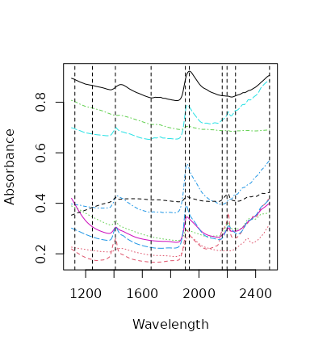
Spectra selected with the Honigs algorithm and bands used